Logiciel libre · conception mécatronique · dans le navigateur
De l'idée à la pièce commandée.
L'atelier où une pièce naît de son intention : fabricable, vérifiée, prête à commander — avec l'IA comme technicien.
Pour les concepteurs, techniciens et ingénieurs en mécatronique qui travaillent aujourd'hui avec les outils traditionnels.
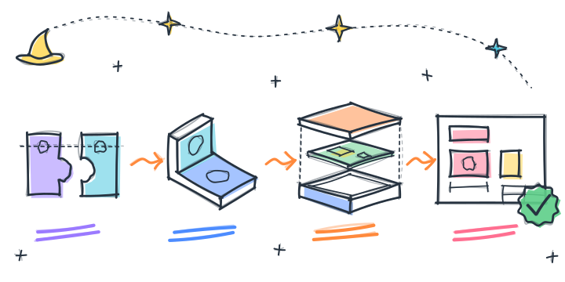
→ suivant · ← précédent · F plein écran · N notes · R rejouer
La question
Et si la pièce naissait fabricable, vérifiée et prête à commander — avant la première esquisse ?
L'intention d'abord
Les interfaces, la matière, le brut du commerce.
La pièce existe par ce qu'elle relie.Le métier dans l'outil
Règles d'atelier, physique, isolation : vérifiées en direct.
Pas au retour du devis.L'IA comme technicien
On confie, on relit l'aperçu, on valide.
Elle ne décide jamais à votre place.La conception aujourd'hui
Six outils autour d'une pièce — et aucun ne sait pourquoi elle existe
L'intention — à quoi sert la pièce, à quoi elle se raccorde — reste dans la tête du concepteur.
Où part le temps
Chaque tour de boucle coûte des jours
↩ et l'on recommence : le modèle, le dessin, le calcul, la nomenclature.
La fabricabilité
se découvre chez le fournisseur.
L'interface oubliée
se découvre au montage.
La distance d'isolement
se découvre à la revue, ou à l'essai.
Rien de tout cela n'est une faute de conception : c'est une vérification qui arrive trop tard.
Ce qui a changé
Trois choses rendent une autre façon de travailler possible
Un noyau CAO dans le navigateur
Un vrai modeleur de solides tourne dans une page web : rien à installer, STEP en sortie.
Des ateliers express
Découpe laser, impression 3D, usinage : un prototype se commande pièce par pièce, en jours.
Une IA qui sait rédiger
Si on lui donne un langage de pièce simple et les règles du métier, elle écrit un premier jet utile.
L'IA prépare. Le concepteur décide.
Le principe
Une pièce existe par ce qu'elle relie : l'interface d'abord
fixation_capot⟷même clé, mêmes paramètres⟷pièce B — côté Bfixation_capot
- Une interface se décrit par ce qu'elle fait : « je me visse sur… », « je reçois un arbre », « je guide une carte ».
- Les deux pièces partagent la clé et les paramètres : changer la vis d'un côté change l'autre.
- L'assemblage se mate tout seul, et dit quand un accouplement est rompu.
- Le dessin cote d'abord les interfaces ; la revue les suit par leur numéro.
Dessiner la pièce devient la conséquence de ses interfaces, plus leur point de départ.
Le parcours
De l'idée à la commande, une brique à la fois
Chaque brique est simple, vérifiable seule, et parle le même fichier texte que les autres.
Brique 1 · L'idée
Une entrevue, et le premier design complet est sur la table
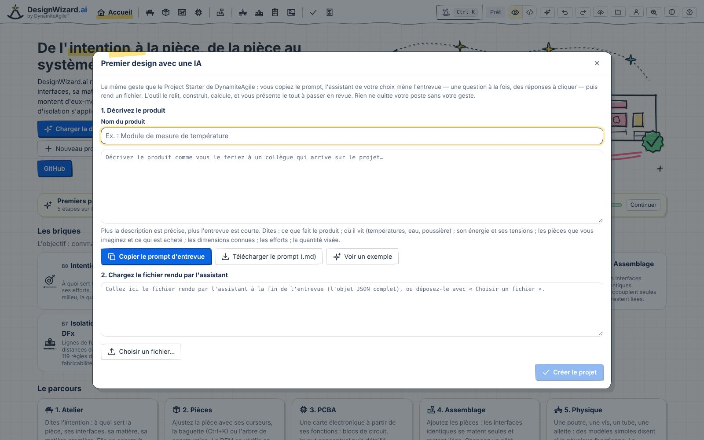
Avec les outils d'aujourd'hui
Une page blanche : on ouvre la CAO et l'on esquisse la première pièce, seul.
Ici
- Vous décrivez le produit ; l'assistant de votre choix mène l'entrevue, une question à la fois.
- Il rend un fichier : pièces, assemblage, carte, calculs — tout arrive en « Brouillon IA ».
- Vous voyez ce qui sera créé avant de l'accepter, puis vous passez chaque élément en revue.
Le premier jet arrive vite ; le travail d'ingénieur commence à la relecture.
Brique 2 · L'Atelier
La pièce naît de son intention — sans esquisse
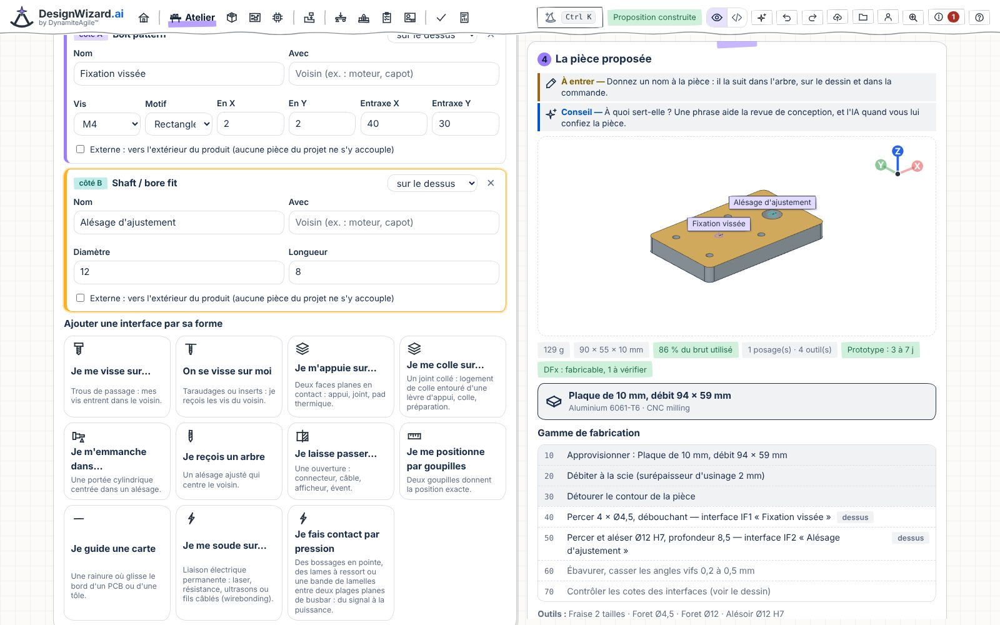
Avec les outils d'aujourd'hui
Plan, esquisse, cotes, extrusion… et l'intention reste dans la tête.
Ici
- Vous dites à quoi sert la pièce et à quoi elle se raccorde, par la forme de ses interfaces.
- Le compagnon prend le brut du commerce — plaque, tôle, rond, cornière — et écrit la pièce : plus petite enveloppe, épaisseur en stock.
- Tout de suite : gamme de fabrication, verdict DFx, délai de prototype.
Comme un artisan à son établi : d'abord ce que la pièce doit faire, ensuite ce que l'on prend sur l'étagère.
Brique 3 · La pièce
Un studio qui parle le langage de l'atelier
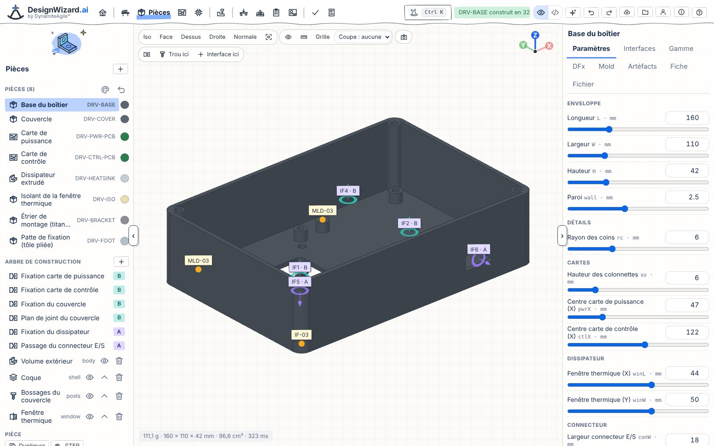
Avec les outils d'aujourd'hui
Des fonctions génériques ; la fabricabilité se vérifie ailleurs, plus tard.
Ici
- Les mots de l'atelier, en anglais comme le métier les nomme — drill, tap, counterbore — et leur glossaire.
- Tout se fait à la souris sur le modèle : un clic droit sur une face propose le trou, la poche, l'interface ; la vue tourne autour du point saisi et, tenue deux secondes, tourne seule.
- Les règles de fabrication tournent en direct, avec un correctif en un clic.
- SI ou impérial : on lit et l'on tape en millimètres ou en pouces ; le projet reste en millimètres.
La pièce est un fichier texte lisible : ses paramètres, ses interfaces, ses opérations dans l'ordre de l'atelier.
Brique 4 · Les procédés spéciaux
Quand la matière décide du dessin
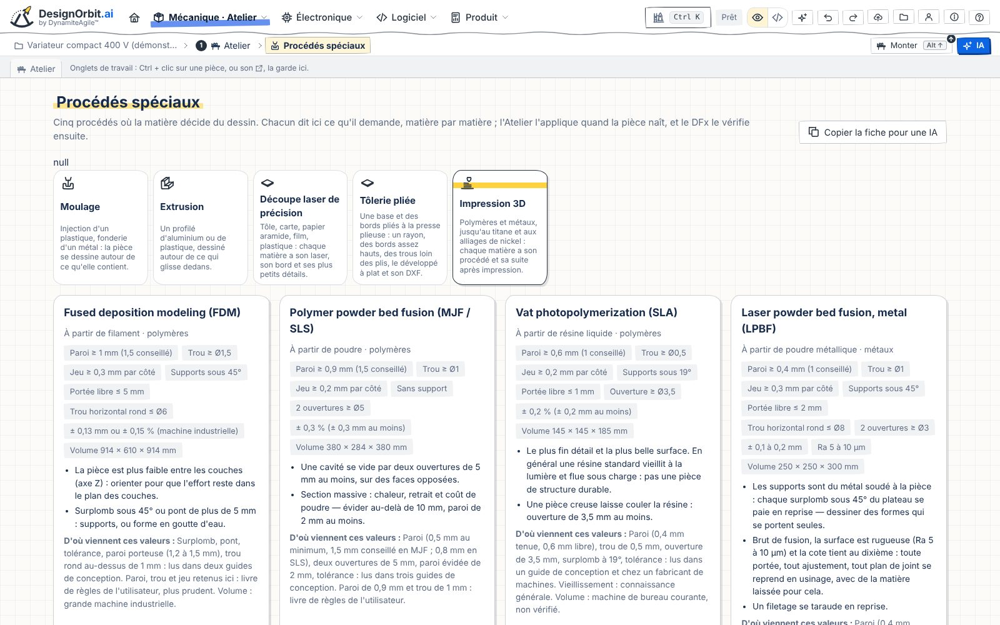
Avec les outils d'aujourd'hui
Les règles du mouleur, du découpeur ou de l'imprimeur arrivent avec le devis.
Ici
- Une pièce moulée ou un profilé se dessine seul autour de ce qu'il contient ; le plan du mold se lit sur la pièce.
- Laser : chaque matière en feuille a son laser, ses épaisseurs, l'état de son bord.
- Tôle pliée : le développé à plat et son DXF avec lignes de pliage.
- Impression 3D, du polyamide au titane : la suite après impression est dans la gamme.
Chaque fiche dit d'où viennent ses valeurs — ce qui a été lu, et ce qui ne l'a pas été.
Brique 5 · L'électrique de puissance
Connecteurs, cellules, busbars : des pièces comme les autres
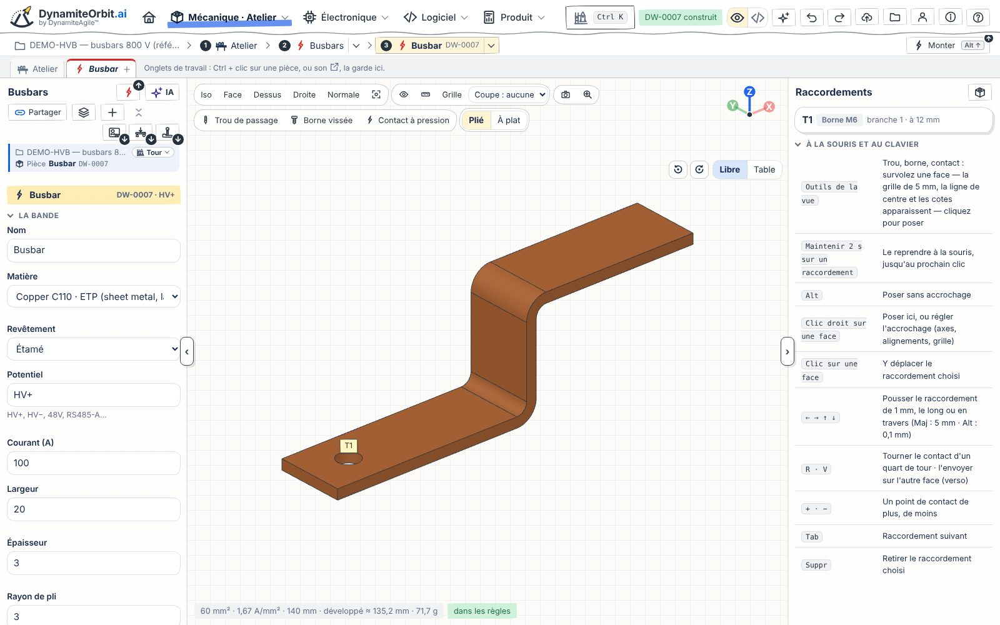
Avec les outils d'aujourd'hui
Le mécanicien et l'électricien travaillent dans deux outils, et se parlent par captures d'écran.
Ici
- Cinquante séries de connecteurs, LV et HV : chacune a son modèle, reconstruit d'après les cotes publiées, et son empreinte de carte.
- Busbar plié ou laminé, circuit flexible de mesure : section, densité de courant, échauffement estimé.
- Soudure, contact à lamelles, borne vissée : ce sont des interfaces, elles se matent.
Un conducteur porte son potentiel : l'analyse d'isolation le lira plus loin.
Brique 5, suite · La carte électronique
La carte : des fonctions aux fichiers de fabrication
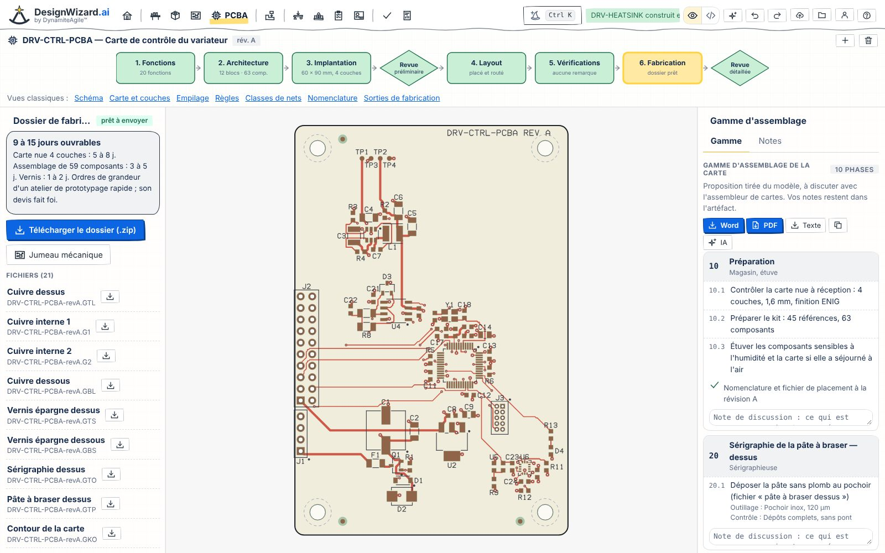
Avec les outils d'aujourd'hui
La carte arrive dans la mécanique comme un bloc importé, souvent une révision en retard.
Ici
- Des blocs fonctionnels à la synthèse, au placement et au routage, avec les règles vérifiées — en millimètres, ou en mil et en pouces.
- Les fichiers de fabrication sortent du même endroit : Gerber, perçage, placement, nomenclature.
- La carte se fixe par ses interfaces, avec la hauteur de ses composants.
Mécanique et électronique partagent le même projet, les mêmes interfaces, la même revue.
Brique 5, suite · Les unités
La conception dans vos unités, les calculs en SI
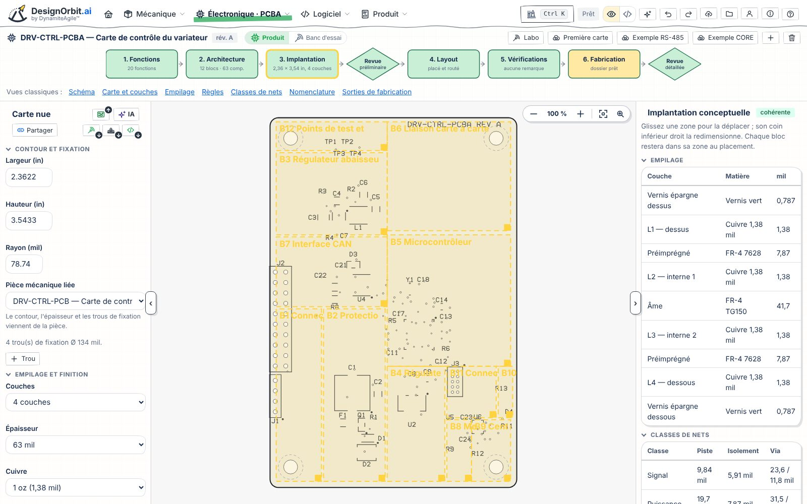
Avec les outils d'aujourd'hui
Un réglage d'unités par logiciel, et des conversions à la main entre la mécanique, la carte et le calcul.
Ici
- Un seul choix, SI ou impérial, pour toute la conception : pièces, assemblage, dessins, gammes.
- La carte se lit comme le métier la lit : mil et pouces, cuivre en onces.
- Les calculs restent en SI : modèles analytiques, simulation, isolation, note de calcul, classeur.
On lit dans son système, on calcule en SI — et le fichier du projet ne change pas.
Brique 6 · L'assemblage
Les pièces se matent d'elles-mêmes, par leurs interfaces
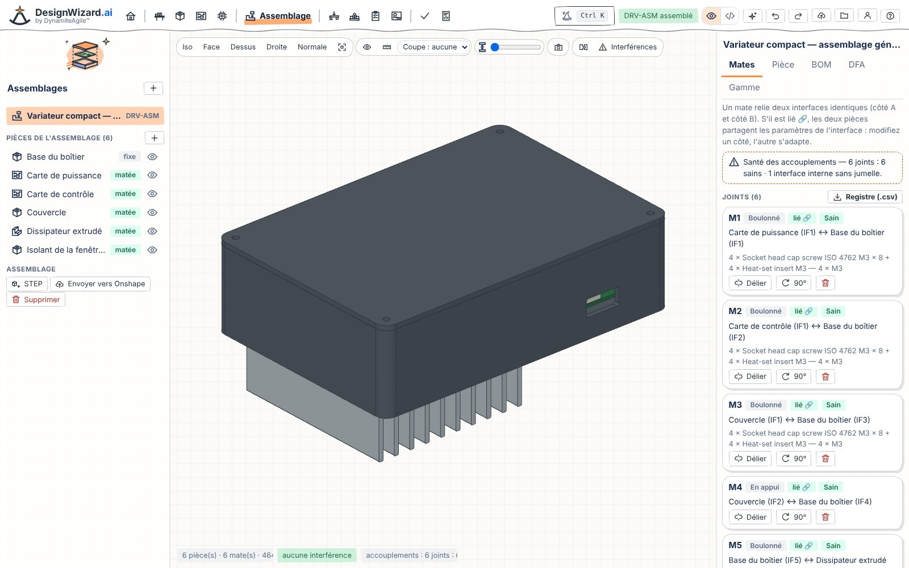
Avec les outils d'aujourd'hui
Des contraintes posées une à une ; l'interface oubliée se voit au montage.
Ici
- Même clé des deux côtés : le mate est automatique, et il suit les modifications.
- La santé de chaque accouplement : sain, à vérifier, rompu ; les interférences sont détectées.
- Éclaté, nomenclature, visserie, gamme d'assemblage.
Une interface libre est une question ouverte : l'assemblage les liste.
Brique 6 · L'assemblage
Par modules, et en plusieurs versions
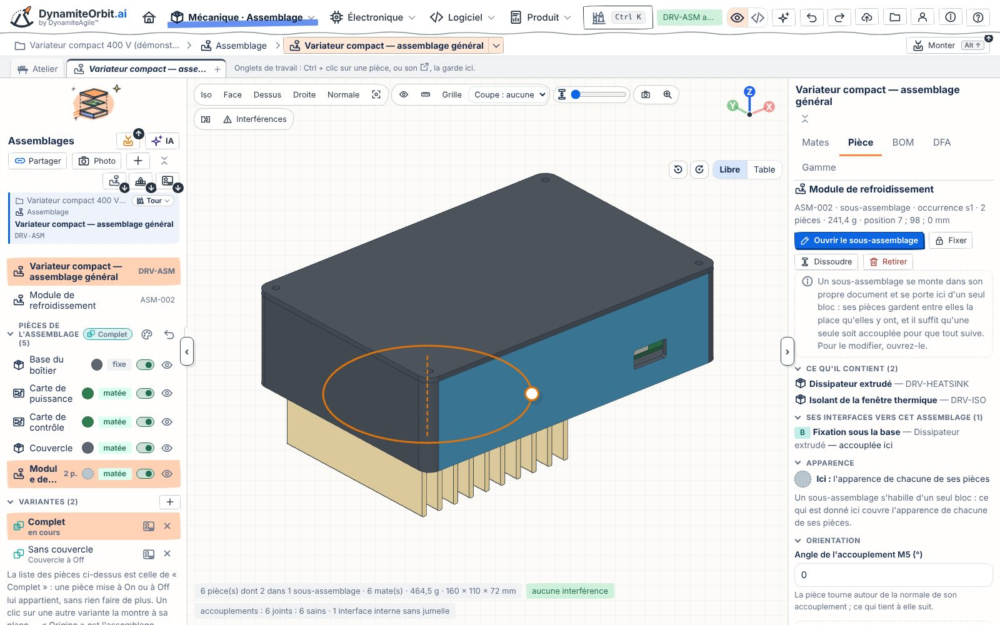
Avec les outils d'aujourd'hui
Un produit à plat, ou des configurations refaites à la main d'un fichier à l'autre.
Ici
- Un assemblage entre dans un autre d'un seul bloc : il s'accouple seul, et la nomenclature se lit par niveaux ou à plat.
- Chaque pièce se met à Off : gardée, mais hors de la vue, de la masse, des dessins et des exports.
- Une variante garde cet état sous un nom ; un clic y revient, et chaque variante a son dessin.
Une famille de produits tient dans un seul projet, et rien ne se perd d'une version à l'autre.
Brique 7 · La physique
Le calcul à la main et la simulation, côte à côte
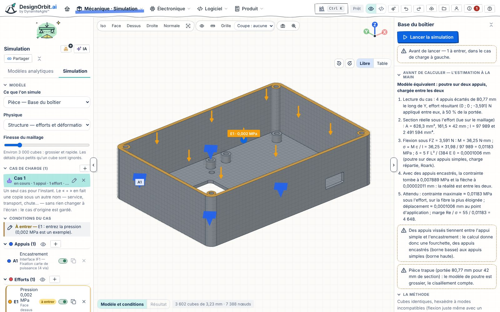
Avec les outils d'aujourd'hui
Un tableur à part, refait à chaque changement ; une simulation réservée au spécialiste.
Ici
- Des modèles analytiques reconnus — poutre, flambement, vis, dissipateur, busbar — préremplis depuis la pièce.
- Des éléments finis simplifiés, structure et thermique, recoupés par l'estimation à la main.
- Symétries et plans de coupe : on ne résout qu'un demi ou un quart du modèle.
Un ordre de grandeur juste, tout de suite, vaut mieux qu'un calcul fin trop tard.
Brique 7 · La physique
Comparer des cas sans refaire le modèle
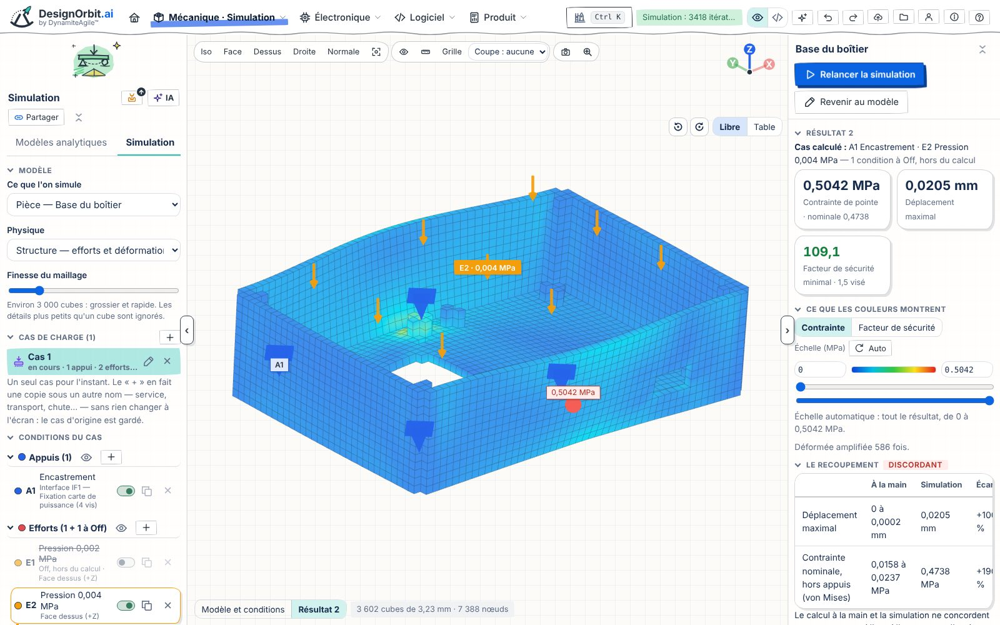
Avec les outils d'aujourd'hui
Un fichier par cas de charge, et l'on ne sait plus lequel a donné quel résultat.
Ici
- Chaque appui, effort ou zone se met à Off ou se duplique : on change une valeur, on relance, on compare.
- Chaque résultat dit le cas qu'il a calculé ; les essais se lisent côte à côte.
- Des zones de raffinement là où ça compte ; le cas est gardé dans le projet, chaque changement s'annule.
Un résultat ne se sépare pas du cas qui l'a produit.
Brique 7, suite · Le calcul à emporter
Un média, pas une valeur — et le calcul part avec vous
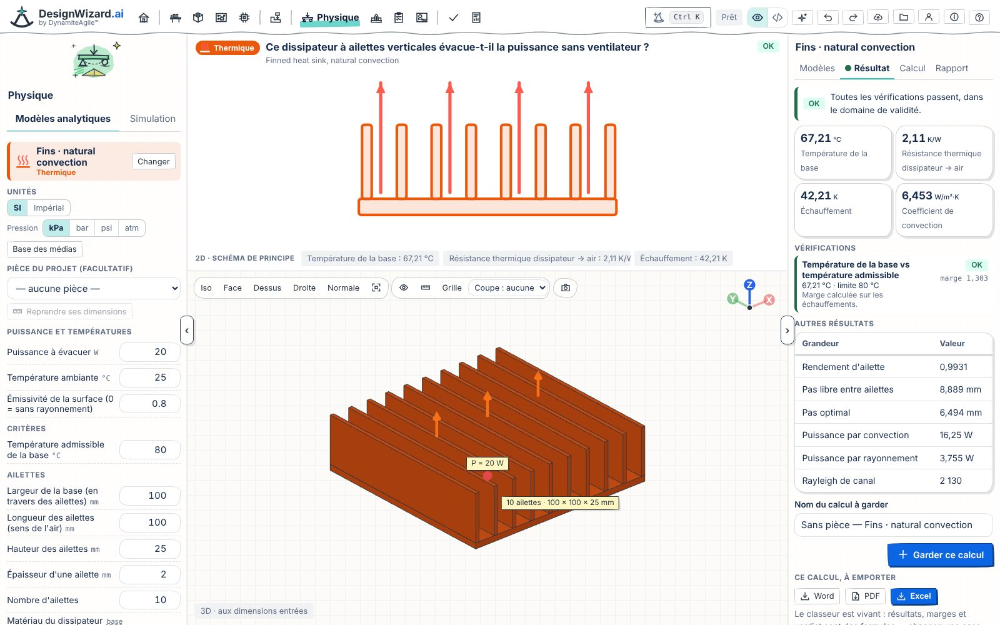
Avec les outils d'aujourd'hui
Un module d'Young tapé de mémoire dans un tableur que personne ne relit.
Ici
- On choisit un média — un aluminium, une eau glycolée, l'air — et ses propriétés suivent, écrites à côté.
- La note de calcul sort en Word et en PDF, au gabarit des documents du projet.
- Le classeur Excel est vivant pour les 21 modèles : une case jaune change, résultats, marges et verdict suivent.
Un calcul que l'on peut refaire sans l'outil est un calcul que l'on peut relire.
Brique 8 · L'isolation
Lignes de fuite et distances dans l'air, sur tout l'assemblage
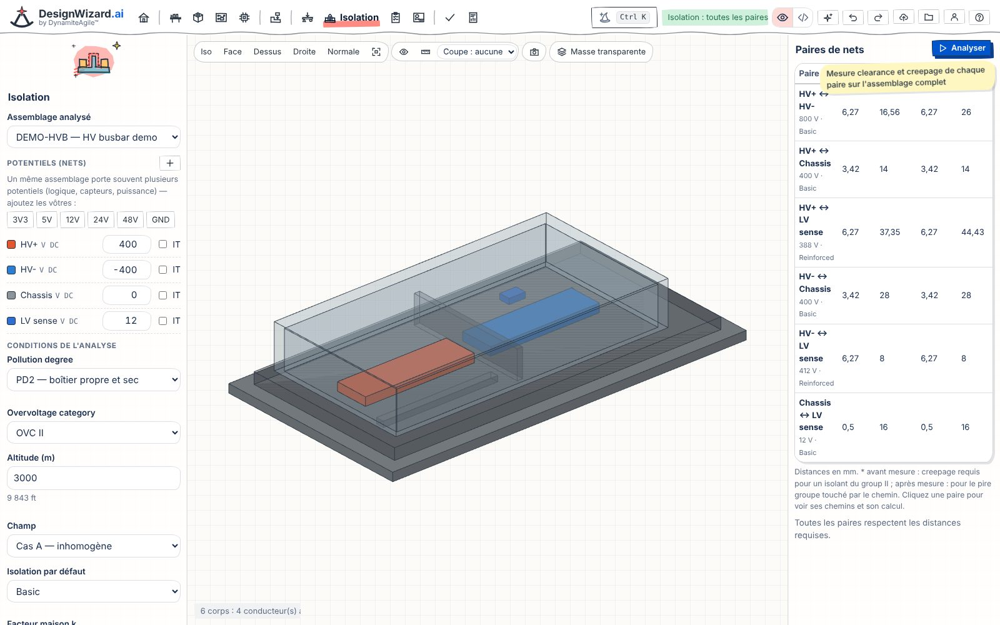
Avec les outils d'aujourd'hui
Des distances mesurées à la main sur le dessin, à la fin du projet.
Ici
- Les distances requises selon IEC 60664-1 : tension, pollution, altitude, matériau.
- Les chemins sont mesurés dans le 3D, entre chaque paire de potentiels.
- Un verdict par paire, et le chemin le plus court montré sur le modèle.
Creepage et clearance deviennent une vérification de tous les jours, plus une surprise de fin de projet.
Brique 9 · DFx
Fabricable et montable : le bilan de tout le projet
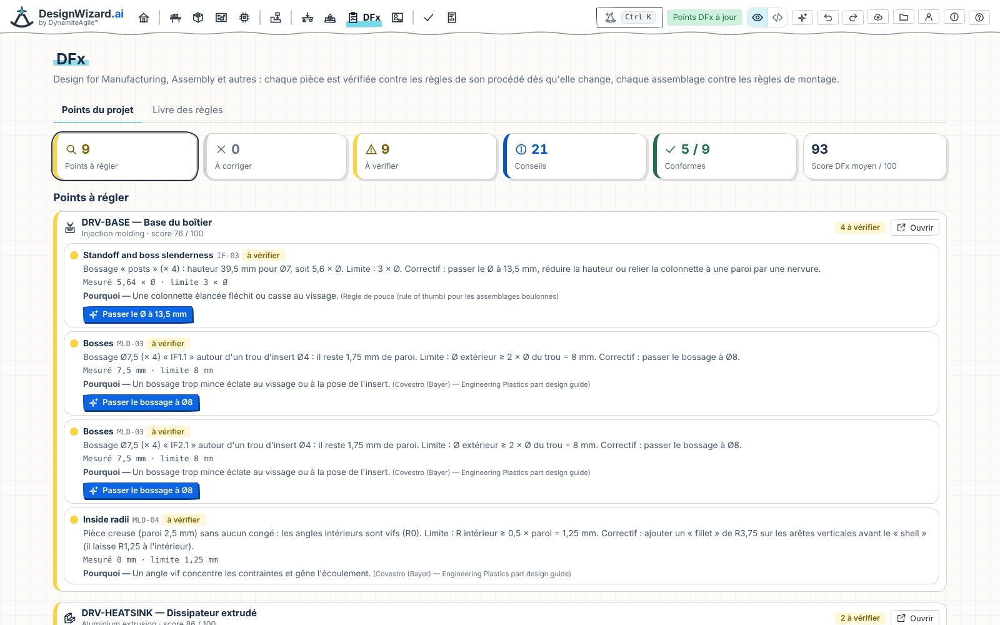
Avec les outils d'aujourd'hui
La liste de contrôle du bureau d'études, relue à la main avant la revue.
Ici
- Chaque pièce est vérifiée contre les règles de son procédé ; l'assemblage contre les règles de montage.
- Une remarque donne la valeur, la limite, la raison et le correctif.
- Le livre des règles s'ouvre : rien n'est caché, chaque règle cite sa source.
Les règles sont celles d'un atelier, écrites une fois, appliquées à chaque modification.
Brique 9, suite · Les gammes
De quoi parler au fournisseur, opération par opération
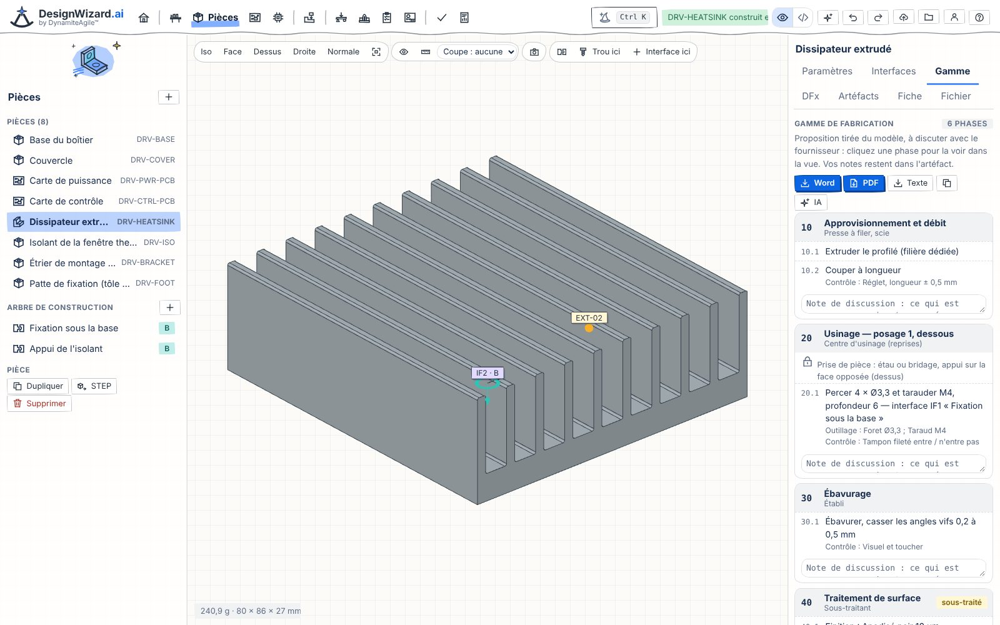
Avec les outils d'aujourd'hui
Le fournisseur reçoit un STEP et un PDF, et devine le reste.
Ici
- La gamme de fabrication pas à pas : brut, posages, opérations, outils, contrôles.
- Les questions à poser à l'atelier, selon le procédé.
- La gamme d'assemblage du produit et celle de la carte.
On arrive chez le fournisseur avec une proposition, pas avec une question.
Brique 10 · Les dessins
Le dessin se fait seul — et reste à jour
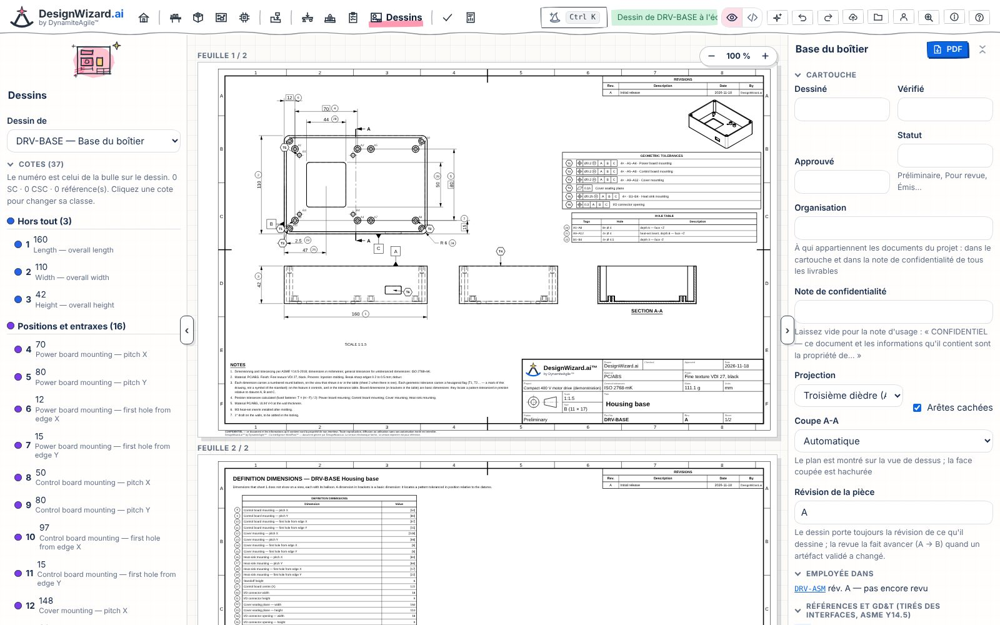
Avec les outils d'aujourd'hui
Une mise en plan refaite à la main, qui prend du retard sur le modèle.
Ici
- Vues, isométrique, coupe A-A hachurée, cartouche et notes : placés d'office.
- Des cotes à bulles numérotées, les tolérances géométriques sur les interfaces, les caractéristiques spéciales.
- Écrit en anglais, vocabulaire du projet compris ; coté en millimètres ou en pouces ; PDF et DXF, à la révision de la pièce.
Ce que le dessin cote en premier, ce sont les interfaces : ce que le voisin doit retrouver.
Brique 11 · La revue
La revue de conception se tient dans l'outil
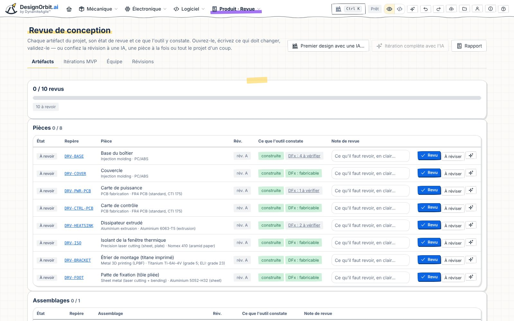
Avec les outils d'aujourd'hui
Un diaporama préparé la veille, des décisions dans un compte rendu.
Ici
- Chaque élément a son état : Brouillon IA, À réviser, Revu, Modifié depuis la revue.
- Des itérations gelées, des révisions libérées avec leur numéro, la règle forme · ajustement · fonction.
- À plusieurs : chacun sa copie du projet, une fusion élément par élément, des messages épinglés sur le 3D.
Ce qui a changé depuis la dernière revue se voit ; ce qui n'a pas été relu aussi.
Brique 12 · La commande
Prête à commander, pièce par pièce
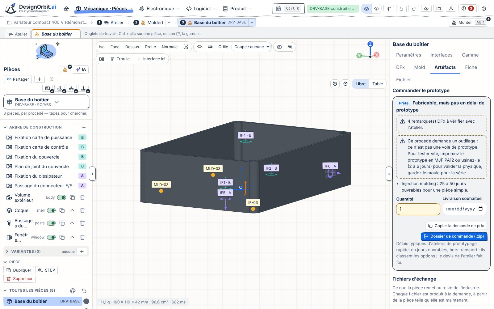
Avec les outils d'aujourd'hui
Rassembler le STEP, le PDF, la quantité, la matière — pour chaque pièce, à chaque révision.
Ici
- Un verdict « prête à commander » et un délai de prototype typique, selon le procédé.
- Le dossier de commande en un fichier : STEP, dessin PDF, DXF, gamme, demande de prix.
- Pour le produit entier : le rapport de revue, de l'image à la décision.
Concevoir, vérifier, commander, essayer : la boucle se ferme avant de lancer une série.
L'IA, partout de la même façon
On confie une tâche comme à un technicien — et l'on relit avant d'accepter
fichier texte + consigne courte→2 · l'assistant de votre choix
travaille de son côté→ 3 · coller sa réponse
l'aperçu dit ce qui change→4 · vous validez
une étape, annulable
- L'outil ne se connecte à aucune IA : c'est vous qui faites entrer ce que vous avez vérifié.
- Le même geste pour une pièce, un assemblage, une carte, une revue, une fiche de procédé.
- Tout ce qui vient d'une IA reste marqué jusqu'à sa relecture.
- Et tout se fait aussi à la main : l'IA est une option, jamais une dépendance.
Ce que l'outil ne prétend pas
Il donne sa forme à une pièce ; il ne la qualifie pas
Des valeurs typiques
Matières, délais, limites de procédé : des ordres de grandeur publiés. La fiche du fournisseur fait foi.
Une simulation simplifiée
Un recoupement du calcul à la main, pas une note de calcul certifiée.
Pas un remplaçant de votre CAO
STEP, DXF et FeatureScript ramènent le travail dans vos outils de production.
Un projet jeune
Les règles n'ont pas encore été confrontées à beaucoup de vraies commandes : vos retours comptent.
Chaque règle cite sa source, et dit ce qui a été vérifié ou non.
Libre
Un logiciel libre, et vos fichiers restent les vôtres
Licence MIT
Le code est ouvert : on l'étudie, on l'adapte, on l'enseigne.
Dans le navigateur
Rien à installer ; aucune dépendance, aucun service à payer.
Des fichiers texte
Un projet se lit, se compare, se confie à une IA.
Chez vous
Sur votre poste, ou dans votre propre espace de stockage. Aucun serveur ne reçoit vos pièces.
Une brique à la fois, vérifiable et réutilisable.
À vous
Cinq minutes pour vous faire une idée
1 · Ouvrir
Sur votre poste, sans compte : cloner le dépôt et lancer python designwizard.py.
2 · Charger la démonstration
Un variateur compact : boîtier moulé, deux cartes, dissipateur extrudé.
3 · Suivre les premiers pas
Huit étapes, de la page blanche à la révision libérée ; elles se cochent d'après le projet.
Les onglets, de gauche à droite, suivent l'ordre de cette présentation.- Quelle étape de votre parcours vous coûte le plus de tours ?
- Quel procédé, quelle règle, quelle norme manque ?
- Que faudrait-il pour l'essayer sur une vraie pièce ?
Annexe · si la question vient
Questions probables, réponses courtes
« Et mes modèles existants ? »
L'outil ne reprend pas une pièce de CAO classique : une pièce y renaît de ses interfaces. Dans l'autre sens, tout sort en STEP.
« Et si je ne veux pas d'IA ? »
Tout se fait à la main. L'IA est une option à chaque geste.
« Où vont mes données ? »
Nulle part : elles restent sur votre poste ou dans votre propre espace de stockage.
« Jusqu'à quelle complexité ? »
Des pièces prismatiques, tournées, en tôle, moulées, extrudées, imprimées ; des assemblages de prototype. Pas de surfaces de style.